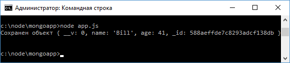

Mongoose
Mongoose представляет специальную ODM-библиотеку (Object Data Modelling) для работы с MongoDB, которая позволяет сопоставлять объекты классов и документы коллекций из базы данных.
Грубо говоря, Mongoose работает подобно инструментам ORM.
Официальный сайт библиотеки, где можно посмотреть всю необходимую документацию:
http://mongoosejs.com
Для работы с Mongoose продолжим работу с проектом из прошлых тем и вначале установим саму библиотеку с помощью команды:
npm install mongoose --save
Далее определим следующий код в файле приложения app.js:
var mongoose = require("mongoose");
var Schema = mongoose.Schema;
// для работы с promise
mongoose.Promise = global.Promise;
// установка схемы
var userScheme = new Schema({
name: String,
age: Number
});
// подключение
mongoose.connect("mongodb://localhost:27017/usersdb");
var User = mongoose.model("User", userScheme);
var user = new User({
name: "Bill",
age: 41
});
user.save(function(err){
mongoose.disconnect(); // отключение от базы данных
if(err) return console.log(err);
console.log("Сохранен объект", user);
});
Здесь прежде всего нам надо подключить mongoose:
var mongoose = require("mongoose");
Так как при обращении к базе данных мы работаем с объектами promise, то необходимо вначале установить их реализацию для свойства Promise:
mongoose.Promise = global.Promise;
Данные, которые используются в Mongoose, описываются определенной схемой.
Например, в прошлых темах мы сохраняли в базу данных объекты с двумя свойствами name и age.
Поэтому описываем здесь следующую схему:
var Schema = mongoose.Schema;
// установка схемы
var userScheme = new Schema({
name: String,
age: Number
});
Схема содержит метаданные объектов.
В частности, здесь устанавливаем, какие свойства будет иметь объект и какой у них будет тип данных.
То есть это схема, которая описывает объект пользователя.
Затем, используя эту схему, создаем модель пользователя:
var User = mongoose.model("User", userScheme);
Первый параметр в методе mongoose.model указывает на название модели, а второй параметр - собственно схема.
Далее мы можем создавать объекты этой модели:
var user = new User({
name: "Bill",
age: 41
});
Для подключения к базе данных применяется метод mongoose.connect(), в который передается адрес базы данных на сервере mongo:
mongoose.connect("mongodb://localhost:27017/usersdb");
И в конце у объекта вызывается метод save.
Этот метод определен для всех создаваемых моделей, он сохраняет текущий объект в базу данных:
user.save(function(err){
mongoose.disconnect(); // отключение от базы данных
if(err) return console.log(err);
console.log("Сохранен объект", user);
});
С помощью метода mongoose.disconnect(); происходит отключение от бд.
Так как метод save возвращает promise, то есть и другая форма сохранения объекта:
user.save()
.then(function(doc){
console.log("Сохранен объект", doc);
mongoose.disconnect(); // отключение от базы данных
})
.catch(function (err){
console.log(err);
mongoose.disconnect();
});
С помощью метода then мы можем получить данные, которые возвратил нам сервер и выполнить обработку результата.
Запустим приложение и выполним добавление объекта:
